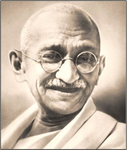

<?xml version="1.0" encoding="UTF-8"?>
<rss version="2.0"
	xmlns:content="http://purl.org/rss/1.0/modules/content/"
	xmlns:wfw="http://wellformedweb.org/CommentAPI/"
	xmlns:dc="http://purl.org/dc/elements/1.1/"
	xmlns:atom="http://www.w3.org/2005/Atom"
	xmlns:sy="http://purl.org/rss/1.0/modules/syndication/"
	xmlns:slash="http://purl.org/rss/1.0/modules/slash/"
	>

<channel>
	<title>Chronosynclastic Infundibulum &#187; legacy</title>
	<atom:link href="http://www.semanticoverload.com/tag/legacy/feed/" rel="self" type="application/rss+xml" />
	<link>http://www.semanticoverload.com</link>
	<description>The world through my prisms</description>
	<lastBuildDate>Thu, 07 Apr 2011 17:36:17 +0000</lastBuildDate>
	<language>en-US</language>
	<sy:updatePeriod>hourly</sy:updatePeriod>
	<sy:updateFrequency>1</sy:updateFrequency>
	<generator>http://wordpress.org/?v=3.5</generator>
		<item>
		<title>Gandhi&#8217;s Legacy</title>
		<link>http://www.semanticoverload.com/2008/09/02/gandhis-legacy/</link>
		<comments>http://www.semanticoverload.com/2008/09/02/gandhis-legacy/#comments</comments>
		<pubDate>Tue, 02 Sep 2008 05:38:57 +0000</pubDate>
		<dc:creator>Semantic Overload</dc:creator>
				<category><![CDATA[history]]></category>
		<category><![CDATA[india]]></category>
		<category><![CDATA[freedom]]></category>
		<category><![CDATA[Gandhi]]></category>
		<category><![CDATA[legacy]]></category>

		<guid isPermaLink="false">http://www.semanticoverload.com/?p=161</guid>
		<description><![CDATA[I have often wondered about the effectiveness of Mahatma Gandhi&#8217;s role in securing India&#8217;s freedom. Was it Mahatma Gandhi and other freedom fighters&#8217; struggle that secured India its freedom, or would sovereignty have been granted anyway? Of course, the high school history books would have none of this. They emphatically state that Gandhiji and others [...]]]></description>
				<content:encoded><![CDATA[<p><a href="../../../wp-content/uploads/2008/09/gandhi.jpg"></a></p>
<p>I have often wondered about the effectiveness of Mahatma Gandhi&#8217;s role in securing India&#8217;s freedom. Was it Mahatma Gandhi and other freedom fighters&#8217; struggle that secured India its freedom, or would sovereignty have been granted anyway? Of course, the high school history books would have none of this. They emphatically state that Gandhiji and others forced the Great British Empire into submission and gave us the free nation. But let&#8217;s not fool ourselves into lending authenticity to history books written under the heavy influence of caste and religion based politics. Lets take a closer look at what really happened. And lets not narrow our focus down to India, but look at world events are large.</p>
<p><span id="more-161"></span></p>
<p>For starts, I choose to dismiss the claim that if it hadn&#8217;t been for Gandhi and others, we wouldn&#8217;t have secured our freedom. Why? Because between 1940 to 1960 (or whereabouts) around 27 countries gained independence from the colonial power (source: <a href="http://en.wikipedia.org/wiki/Independence_Day">wikipedia</a>). Now that&#8217;s too large a number for it to be coincidental. There is definitely a pattern here, and pattern often follows causation. So what happened in the 30&#8242;s and 40&#8242;s that ended colonialism in such a dramatic fashion in over two dozen countries? Answer: World War II. The world war was such a severe strain and drain on the imperial forces that they could no longer had the economic, political, and military power to sustain the colonies. Consequently, they had to relent to the indigenous separatist movements, and at times even voluntarily give up on colonies (the latter happened with many countries in Africa; this explains why 30% of political boundaries in Africa are straight lines: because they were drawn on the map, not on the ground). Personally, I find this argument a lot more compelling that what the story that history books tell.</p>
<p>Natural question/accusation is: Does this diminish Gandhi&#8217;s legacy vis-a-vis free India? Ironically, I find myself saying &#8216;no&#8217;. The British may have given India its political identity, but it was Gandhi who gave India its cultural and social identity. His freedom movement gave people a sense of community, a sense of group identity. To a large extent, this is the reason why India is one of the most successful democracies in the world where as a large part of Africa is still struggling to establish themselves as a nation.</p>
<p>It is important to remember that the concept of a nation-state was imposed upon most colonies (on independence) by their colonial powers. But the people, for most part, were not ready to embrace it. The civil wars in Africa and Iraq typify that sociological resistance. But somehow it was different in India. Yes, there was civil unrest in India following its independence, but nothing crippling. And this was despite the fact that provinces in India were as different from each other as countries were in Europe. It took a tyrant to hold Shias, Sunnis, and Kurds in a united Iraq, whereas India has held its own with over a dozen religions, 50 languages, hundreds of disparate communities. How? Why? The answer is M.K. Gandhi. It is because Gandhi helped bind people together as Indians, he created the nation-state of India among everyone living there. Seldom has any individual made such an impact on such a diverse society.</p>
<p>So yes, Gandhi did deliver India its freedom, its true freedom. But not how the history books describe it. His legacy is much more palpable than dates and events in a book.</p>
]]></content:encoded>
			<wfw:commentRss>http://www.semanticoverload.com/2008/09/02/gandhis-legacy/feed/</wfw:commentRss>
		<slash:comments>20</slash:comments>
		</item>
	</channel>
</rss>
